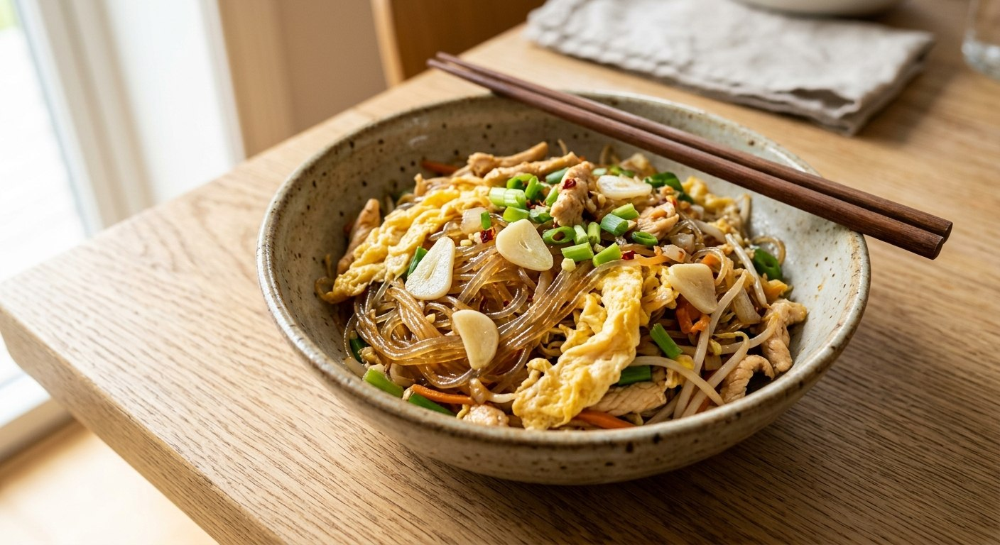

Glass noodles fried with egg until they drink the sauce — the stir-fry that comes in a purist's version and a family version.

ผัดวุ้นเส้น is the quiet one in the noodle-stall line-up — no smoke, no drama, just glass noodles, egg, and a sweet-savoury seasoning the noodles absorb as they fry. Its signature is กระเทียมดอง, pickled garlic: half a cup of the pickling brine goes into the wok and becomes the dish's whole flavour engine, sweet, sour and garlicky at once.
Wongnai's grandmother version runs on five ingredients — noodles, eggs, pickled garlic, oyster sauce, a little sugar and soy — and the recipe's core wisdom is in one line: season it stronger than you want, because the noodles will dilute it. The sliced egg goes in at the very end, once the noodles have finished drinking.
Then there's the fuller family version. Aroifin's runs three eggs fried first and set aside, then garlic, cabbage, noodles, water, and the seasoning — with an explicit rest step so the noodles soak up the sauce before the tomato, carrot and spring onion go in. Paula's ancient Cookpad version keeps the pickled garlic and adds cabbage, tomato and chilli. The purist version is the stall original; the vegetable version is the home kitchen's answer to leftovers.
| Thai | English | Amount |
|---|---|---|
| วุ้นเส้นสด | Fresh glass noodles | 1 pack |
| กระเทียมดอง | Pickled garlic (+ its brine) | 1 cup |
| ไข่ไก่ | Eggs | 1–2 |
| น้ำมันหอย | Oyster sauce | 1 tbsp |
| น้ำตาลทราย | Sugar | 2 tsp |
| ซีอิ๊วขาว | White soy | 1 tsp |
| น้ำมันพืช | Vegetable oil | 3 tbsp |
The full version (Aroifin): 200 g noodles, 3 eggs, a small cabbage, tomato, carrot, spring onion, celery, a whole head of garlic, 1 tbsp oyster, 1½ tbsp seasoning sauce, ½ tbsp dark soy, 1 tbsp sugar — with the rest-and-drink step. Paula's ancient version (Cookpad): keeps the pickled garlic, adds cabbage, tomato, spur chilli and 100 ml of water.
Pickled or fresh garlic. Wongnai and Paula use pickled garlic — and Wongnai's brine is the whole seasoning base. Aroifin uses a head of fresh Thai garlic. The pickled school gets the dish's signature sweet-sour tang; the fresh school is cleaner and saltier.
Vegetables or none. Wongnai's purist version is noodles, egg, garlic — nothing else. Aroifin and Paula add cabbage, tomato, carrot and chilli. The bare version is the stall original; the loaded one is the home dinner.
Egg, whole or scrambled. Wongnai fries the egg whole, slices it, and returns it at the end so it stays in ribbons. Aroifin and Paula scramble it into the dish at the start. Ribboned egg looks better; scrambled egg flavours the noodles.
Water and rest. Aroifin adds water and lets the noodles rest in the sauce so they soften evenly; Wongnai lets the brine alone do that work. Both are the same move — let the noodle drink, don't boil it.
The sweetener. Sugar (Wongnai, Aroifin) or a sugar substitute in Paula's diet-friendly version. The sweetness balances the pickling brine's sour — skip it and the dish tips flat.
This recipe is translated from the following Thai-language sources. Where they disagree, we've said so.
1. Wongnai — "วุ้นเส้นผัดไข่กระเทียมดอง" by ชิมทั่วไทย (the purist recipe used here) — wongnai.com
2. Aroifin — "วิธีทำ ผัดวุ้นเส้นใส่ไข่ เมนูยอดฮิต" (the full vegetable version) — aroifin.com
3. Cookpad — "ผัดวุ้นเส้นกระเทียมดองโบราณ" by Paula's Cooking (the ancient home version) — cookpad.com